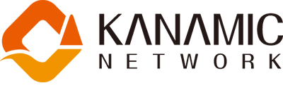

UVGI（Ultra Violet Germicidal Irradiation）とは紫外線照射による殺菌のことです。紫外線はウイルスの核内に吸収され、化学変化を起こしたDNAはコピー機能を失うため、細菌やウイルスは増殖できなくなり死滅します。DNAが破壊される耐性菌が生まれないという大きなメリットがある殺菌方法です。
このUVGI技術は、米国疾病対策予防センターが発行する「医療施設における環境感染管理への勧告」のカテゴリーIIにおいて「導入を推奨し、示唆に富む臨床研究または疫学的研究あるいは理論的根拠により支持された事項」としてUVGIの使用に関しての記載があります。UVGIは既に米国や欧州において高い殺菌効果が証明されており様々な分野で応用されています。また米国疾病対策予防センターの「保健医療関連施設における結核菌の伝染予防のためのCDCガイドライン」は、空気感染対策の重要な指針となっており、この日本語訳版に各種測定データとともに紫外線殺菌装置が掲載されています。
※米国疾病対策予防センター（CDC:Centers for Disease Control and Prevention）は、1946年に創設された米国保健福祉省所管の感染症対策の総合研究所で、WHO（世界保険機関）とともに世界の感染症に対応している専門機関です。CDCからの勧告は現存する科学的データ、理論的根拠等をもとに分類され、可能な限り科学的根拠に基づいて作成されるため、世界基準とみなされるほどの影響力を持っています。
空気感染する病気の代表は、麻疹（はしか）・水痘（水ぼうそう）・結核などです。
また、今回の新型コロナウイルスでも話題となったエアロゾル感染も注意が必要です。
３つの密（密閉空間、密集場所、密接場面）でクラスター（集団感染）の可能性が高いといわれています。
ウイルスの感染防止には、接触感染と飛沫感染そしてエアロゾル感染に気を付けないといけません。
新型コロナウイルスは、空気中に3時間生き続けるという研究発表もあります。
よって、常に換気が難しい室内などでは、空気感染対策が重要になってきます
。
・接触感染対策としての「手洗い・うがい・アルコール消毒」
・飛沫感染対策としての「マスク着用」
・エアロゾル感染対策としての「紫外線殺菌等による空間除菌」
の３つ全てを行うことで、感染症の感染拡大を防止できる可能性が上がるため「UVCエアクリーンmanager®️」が最適です。
あらゆる菌種・ウイルスに対して優れた殺菌力効果をもつ『UV-Cランプ』を使用。代替ウイルスに対する除去性能評価試験で除去率99.99％を達成。
紫外線の殺菌作用は波長253.7nm(UV-C)付近が最も強く、その殺菌力は直射日光にも含まれている波長350nmの紫外線の約1,600倍にも達します。「UVCエアクリーンmanager®️」は、高い殺菌効果を持ったUV-Cを発生させるUV-Cランプを使用しており、「あらゆる菌種・ウイルスに有効(1※)」「耐性菌をつくらない(※2)」「常温環境で殺菌」など空気殺菌装置として理想的な特性を備えています。
※1：遺伝子・DNAを持つ個体を不活性化させます
※2：紫外線に対する抵抗力を持った菌を作りません
独自の水平照射構造により、細菌・ウイルスが集まる空間を狙い撃ち
人がいる場所でも24時間365日安心して連続殺菌が可能
従来の殺菌灯は紫外線が下方向に照射される構造のため、人体に影響しないよう無人の環境でしか使用することができませんでした。「UVCエアクリーンmanager®️」は、紫外線を水平方向だけに照射する水平ルーバー構造を採用しています。これにより室内の上部(高さ2.1m以上)に集まる細菌・ウイルスに対して、強力な殺菌効果を持つ紫外線(UV-C)をダイレクトに照射することが可能。殺菌空間(高さ2.1m以上)と生活空間(高さ2.1m以下)が分離されることで、人体に紫外線が当たる危険性が無く、人がいる環境においても安全に24時間365日連続使用することができます。
省電力・長寿命・長期間メンテナンスフリーで低ランニングコスト実現
室外機器や屋外への排気ダクトなどが無いため面倒な配管工事は不要。壁面や天井に簡単に設置することができます。
UVCエアクリーンmanager®️の設置前・設置後に浮遊菌の検査(有償)を実施することができます。浮遊菌数が一定の値以下に減少すれば「空気環境測定実施証明書」を発行することができ、他施設との差別化ともなり施設の環境管理PRにご活用いただけます。
UVCエアクリーンmanager®️は人体に影響はないのか？
紫外線を水平方向にのみ照射するよう、ルーバー構造を採用しているため、人体に直接紫外線が当たることがなく、安全です。また、人体に悪影響を及ぼさないオゾンレスタイプのランプを使用しています。設置時や定期点検の都度、紫外線測定器を使用し、必ず安全確認を行っています。
紫色の光が見えているが大丈夫なのか？
紫色に見えるのは可視光線で紫外線ではありません。可視光線は紫外線に比べ波長が長く、拡散した可視光線(=紫色の光)が目に届いています。紫外線は水平方向にのみ照射されるよう設計されており、装置の設置時及び定期点検時には紫外線測定器で、本体が正しく稼働しているか安全性を確認しています。
壁に当たって反射した紫外線は人体に被害はないのか？
壁に当たった紫外線はほとんど反射しません。また、通常壁に到達する前に減衰しています。紫外線に対する安全性を確保するために、紫外線測定器を使用し、厳重に安全管理を行っています。
殺菌効果を実証できるものはあるか？
空気清浄度評価システムで、UVCエアクリーンmanager®️の設置前・設置後に浮遊菌の数を比較検証することができます。(有償サービスです)浮遊菌の数が一定値以下に下がれば、「空気環境測定実施証明書」の発行を受けることができ、他施設との差別化や、自社の衛生環境対策PRにつながると好評をいただいています。
紫外線ランプの寿命は？
約6,000時間です。電気代は一日中使用していても10円以下です。従来の紫外線ランプの約2倍の長寿命を持つオゾンレス紫外線ランプを使用しています。
メンテナンスは？
機器のメンテナンスや紫外線ランプの交換等は販売代理店が行います。紫外線ランプの寿命を考慮し、約6ヶ月に一度交換作業がございます。また、フィルターは使用していないため、お客様にて毎日の点検は不要です。その他メンテナンスについてもお気軽にご相談ください。
オゾン発生装置や次亜塩素酸水噴霧器との違いは？
オゾン発生装置、次亜塩素酸水噴霧器とも、それぞれ濃度が高いほど殺菌効果は高くなりますが、安全のため有人環境では使用出来ない場合があります。UVCエアクリーンmanager®️は、有人環境でも安全に使用することができます。
販売
設置・メンテナンス